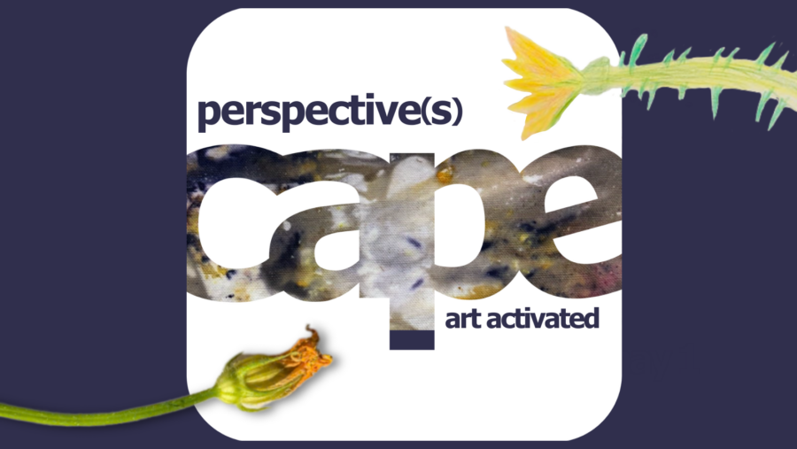

Perspective(s) Art Activated: The Shared Thread Knot
Art Activated: The Shared Thread Knot
Join us as CAPE teaching artists Fiorella Gomez and Amelia Cintula discuss and reflect on their community art project at Currier Elementary in the suburb of West Chicago which draws inspiration from the 1970s arpillera workshops run by Chilean women. The event will feature a hands-on workshop focused on sensory and tapestry art, alongside story-sharing—all serving as vital expressions of community resilience, healing, and joy.